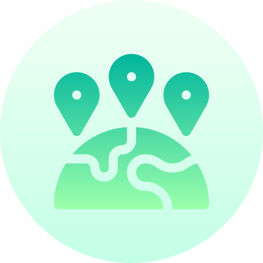

home > 사업소개 > 고객서비스사업
고객서비스사업
NO.1 고객서비스 전문 기업 kt is
KT 유선 고객센터
서비스 개요
kt유선상품, 솔루션 관련 일반 및 전문 상담 전화를 통해 kt상품에 대한 업무를 직접 방문 없이 one-stop으로 해결 가능
-
- 일반상담 분야
- kt 유선상품(일반전화,인터넷,TV,인터넷 전화 등) 관련상담, 서비스 신청 및 요금상담, 민원접수 업무 1차 고객유지 활동 및 상품유치 활동 kt유선상품 고장접수 및 각종 기술상담 가입 상품 확인, 약속시간 변경 등 각종상품 개통정보 확인 및 조정 VIP 고객대상 Special관리, 외국어 전담 상담
-
- 특수상담 분야
- 솔루션 기업 상품(비즈메카, 크로샷서비스 등) 일반/기술 상담 추가단말 유치 상담 및 kt상품 가입사실 검증 기존고객 유지 및 관리, 마케팅 지원 kt 전 상품관련 온라인 상담 SNS를 통한 일반상담 및 클레임 처리
이용방법
-

- 일반전화
- 국번없이 100(무료)
-

- 휴대폰
- 해당지역번호 + 100
-

- 해외
- 82 + 지역번호 + 100
-
- SNS
- 트위터 @kt_cs
페이스북 @kt.corp
인스타그램 @kt.corp
이용가능시간
| 일반상담 | 고장 접수 및 문의 | SNS 상담(평일, 주말, 휴일) |
|---|---|---|
| 평 일- 09:00 ~ 18:00 토요일- 09:00 ~ 12:00 | 24시간 (연중무휴) | 24시간 (연중무휴) |
KT 무선 고객센터
서비스 개요
kt무선상품(kt휴대폰, 요금제, 부가서비스 등) 관련 상담
- 서비스 범위 및 종류
- kt휴대폰 각종신청/변경/조회, 요금안내, 휴대폰관리, 요금제/부가서비스, 멤버쉽 및 혜택. 제휴/할인서비스, 통화품질 문의 사이버 상담 : 이메일, 트위터, 페이스북 로밍 이용 문의, 해외망 장애 상담
이용방법
-
- 일반전화
- 국번없이 100(무료)
-
- 휴대폰
- 해당지역번호 + 100
-
- 해외
- 82 + 지역번호 + 100
-
- SNS
- 트위터 @kt_cs
페이스북 @kt.corp
인스타그램 @kt.corp
이용가능시간
| 일반상담 및 전문상담 | 단말기 분실/통화품질/미납요금/문의 | SNS 상담(평일, 주말, 휴일) |
|---|---|---|
| 평 일- 09:00 ~ 18:00 | 24시간 (연중무휴) | 24시간 (연중무휴) |